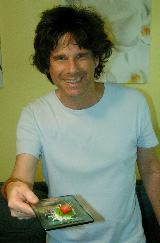

cse.tamu.edu | 979.845.0024
cse.tamu.edu | 979.845.0024
 Andruid Kerne is an interdisciplinary researcher working to invent the future of human expression. My Interface Ecology Lab develops human-centered systems that amalgamate design, algorithms, semantics, software, and hardware. In conjunction with computing, we synthesize methods from art, design, psychology, and sociology.
I hold a B.A. in applied mathematics / electronic media from Harvard, an M.A. in music composition from Wesleyan, and a Ph.D. in computer science from NYU. I have published over 100 papers. I have raised over $2.9M in research funding. I was the Papers Chair of ACM Creativity and Cognition 2015.
I create provocative dynamics of thought, emotion, and participation in and around information environments, tools, installations, and performances. This opens the range of expressive, creative, and social processes embodied by computational artifacts, developing interactivity in terms beyond efficiency: ideation, play, participation, and delight.
Our research is grounded in interface ecology. The interface ecosystems meta-framework connects theory and practice to construct the interface as a border zone between heterogeneous systems of representation: personal and machinic, physical and electronic, analog and digital, media and methodologies. Forms and processes are transformed by the investigation of new connections between these systems. Fields of systematic language are transformed through the interjection of personal expressive forms.
Our research is embodied in systems: interfaces, ontologies, processing frameworks, components. Science and engineering, art and design, the creative and the systematic, development and evaluation. The goal is nothing short of transforming the relations between human and machine to be more expressive and joyful, to shift the balance of power in this equation in favor of the sensitivities that characterize what it means to be human.
My teaching connects theory and practice. I involve students in processes of asking questions, as well as answering them; in defining problems, as well as solving them. Methodologies are connected in the border zone of interface analysis and synthesis. Human values are emphasized in the context of science and engineering. Creative process and the expression of individuals and groups are fostered.
I have also worked extensively with integrated media performance, music composition, and audio recording. Some of my work with sound can be found here.